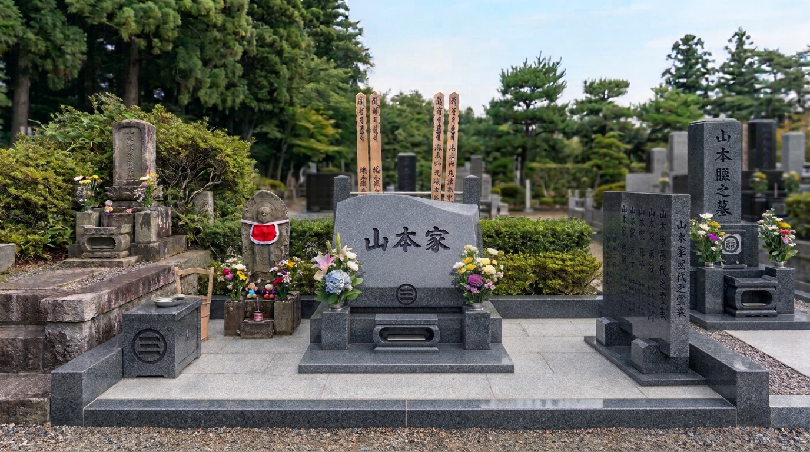
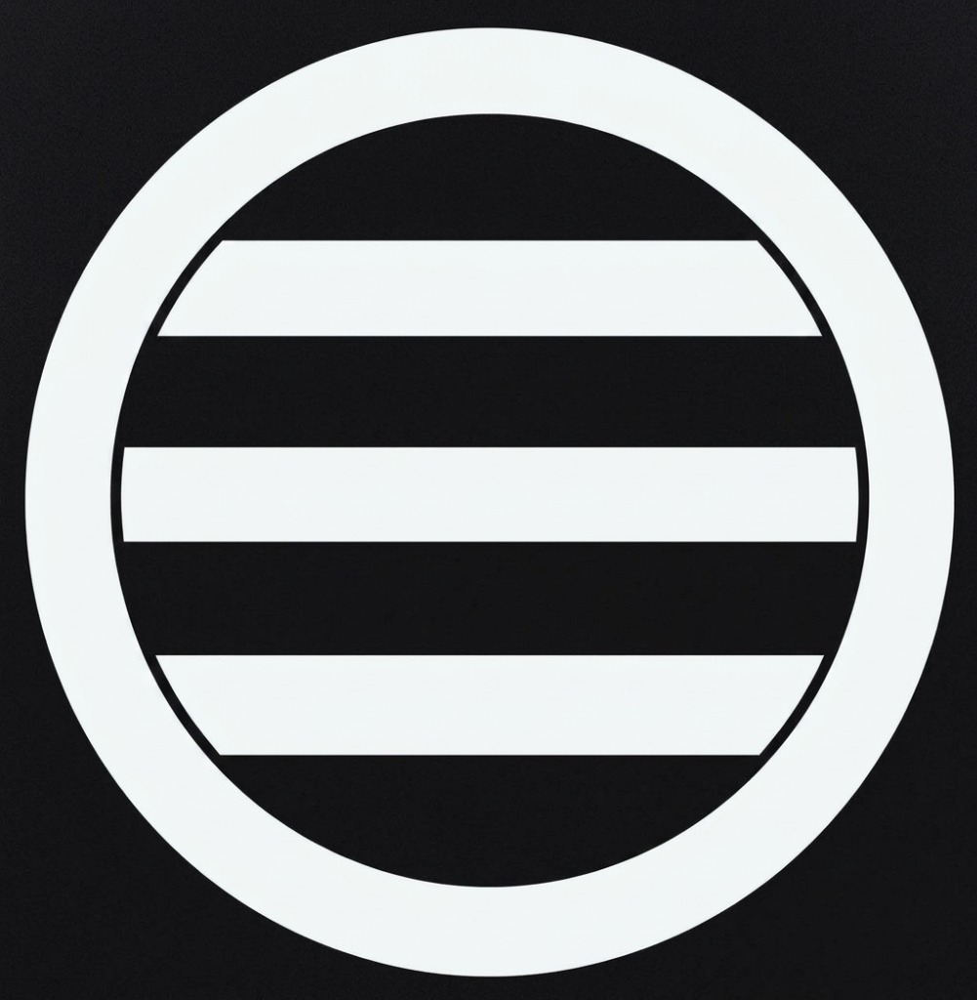
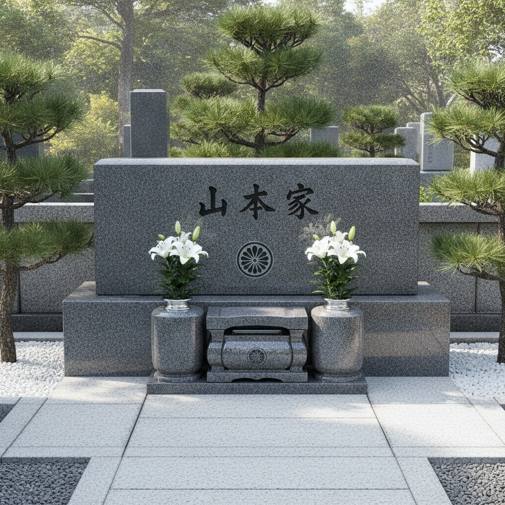
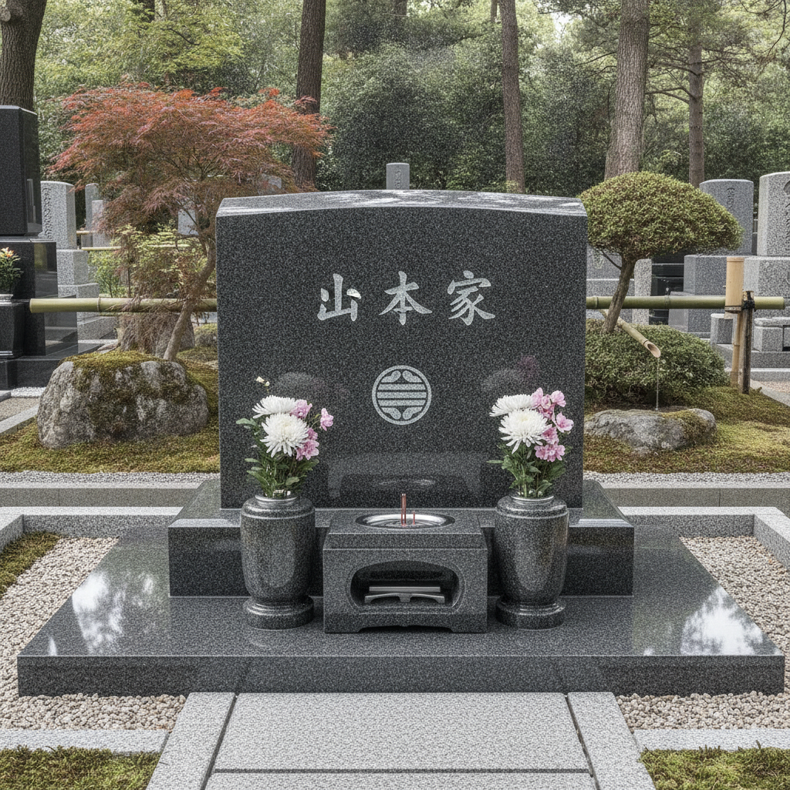
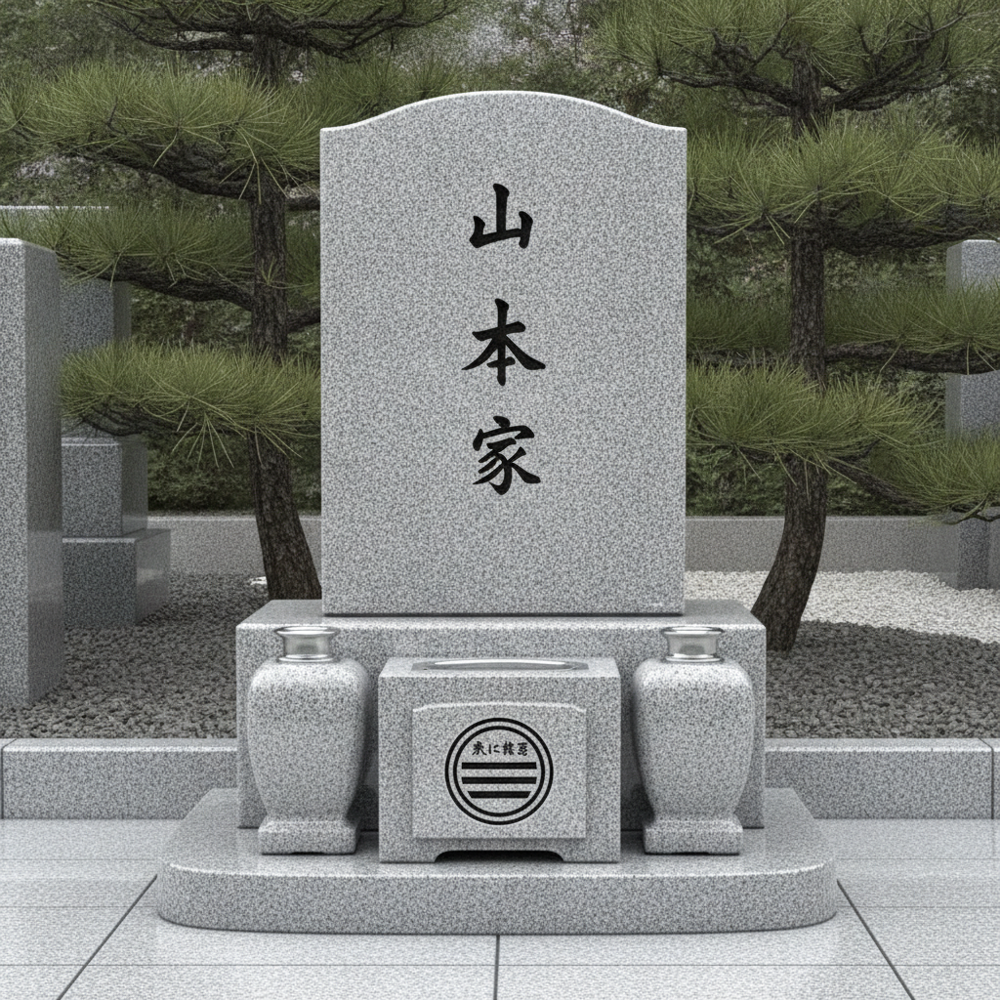
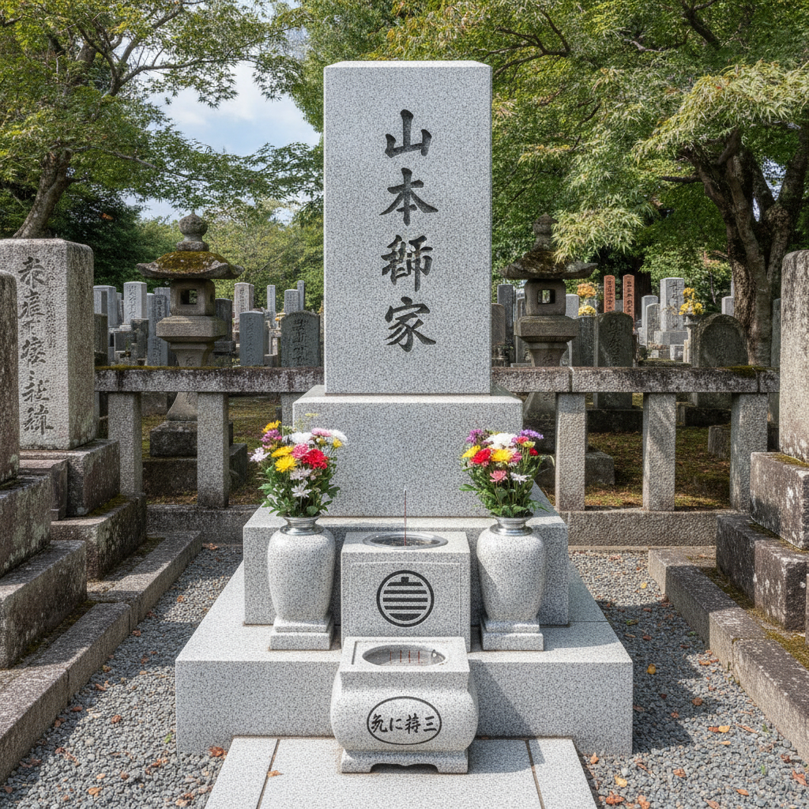
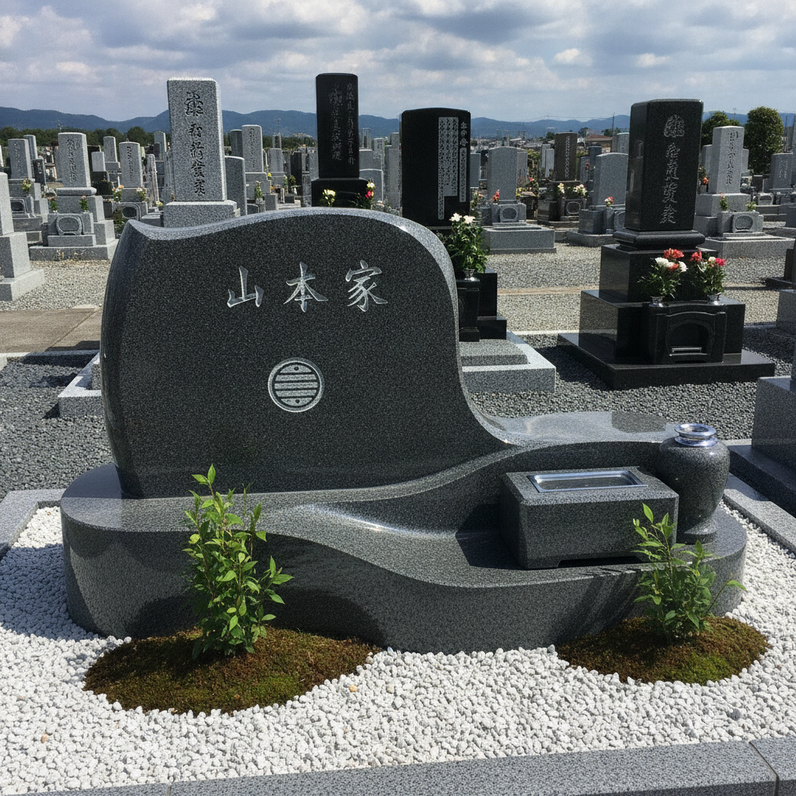

構想まとめ — 更新日: 2026-11-03

| 項目 | 確定仕様 | 備考・想定 |
|---|---|---|
| 用途 | 山本家の先祖墓 | — |
| 塔婆立 | 先祖墓の背面に設置。台座は簡易な石製、塔婆自体は木製 | — |
| 水子地蔵 | 既存の小さな水子地蔵を移設、花立・香炉は新設 | よだれ掛けなし。 |
| 霊表 | 設置する | 歴代先祖名を刻む銘板石。先祖墓の右側方に独立して立てる想定。 |
| 物置台 | 設置する | 供物・清掃用具等を置く台石。先祖墓の左側方に設置する想定。 |
| 区画 | 横長長方形の2区画 | — |
| 家紋 |

丸に三引両（まるにみつびきりょう）
（クリックで拡大） |
先祖墓に彫刻。添付図案を正式な版型として使用。 |
| 項目 | 現在の想定 | 備考 |
|---|---|---|
| 墓石 | モダンなデザインで地震に強い墓石 | 正面に「山本家」彫刻、納骨口付き。 未確定事項：彫刻文字（家名）及び家紋「丸に三引両」の彫刻位置（正面下部／中央／側面など）。 |
| 彫刻文字 | 未定 | 家名・歴代名・納骨者名を確定する必要あり。 |
※ その他の想定要素（未確定）：香炉・花立・水盤などの付帯設備、御影石タイル張りの基壇、周囲は砂利敷き。いずれもイメージ画像に基づく想定。
横長長方形2区画の敷地に、中央の先祖墓（モダンなデザインで地震に強い墓石）を軸として構成。
※ 霊表（右）・物置台（左）を基本とし、詳細な寸法や水子地蔵の配置バランスは石材店と現地立ち合いにて相談。
「モダンなデザインで地震に強い墓石」の候補形式（山本家・家紋「丸に三引両」刻印イメージ）。耐震性は重心の低さが大きく影響する。

洋型（横型）
耐震性 ◎
平らな横長の竿石。重心が最も低く、構造的に最も安定。

半洋型
耐震性 ○
洋型よりやや起き上がった板状・緩やかな斜面。トップの初期イメージ画像の中央墓石はこの系統。

和洋折衷型
耐震性 △〜○
縦型だが竿石が丸み・アール状の現代的デザイン。

伝統和型
耐震性 △
角柱の三段重ね（竿石・上台・下台）。高さがあるため免震施工がほぼ必須。

デザイン型
耐震性 形状次第
波型・多面体などオーダーメイドの自由形状。
| 耐震の仕組み | 形よりも接合方法が重要。免震ボンド／免震ゲルを竿石と上台の間に挟む工法、ステンレス製の免震金具で固定する工法がある。地震保証（倒壊・破損時の補償）付きプランを出す石材店もある。 |
|---|---|
| 無難な組み合わせ | 低めの洋型〜和洋折衷型＋免震施工。画像イメージのような丸みのある縦型にするなら、免震ボンドか金具での施工を石材店に確認する。 |
| 項目 | 内容 |
|---|---|
| 現地立ち合い | 12/28予定。2区画の実寸法確認、霊表・物置台・水子地蔵の配置相談。 |
| 見積もり | モダンなデザインで地震に強い墓石＋霊表＋塔婆立＋物置台＋水子地蔵用花立・香炉の一式（水子地蔵本体は既存を移設）。 |
| 提出資料 | 家紋「丸に三引両」の図案画像（確定・本ページ掲載の図案を石材店へ提示）。 |